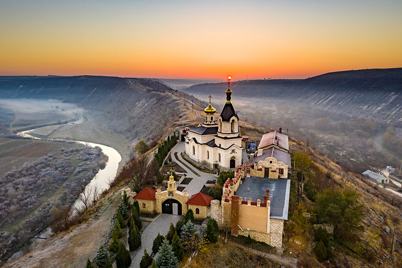

MOLDAVIA

Forma di governo Repubblica parlamentare
Superficie 33 846 km²
Densità 3 547 539 (2018) abitanti
Capitale Chișinău
Moneta leu moldavo
Lingua Rumeno
Storia
Le prime notizie che si hanno di questo territorio risalgono alla metà del secolo XIV, quando i fondatori del Principato di Moldavia crearono villaggi sparsi, senza alcuna organizzazione. Questa dominazione in parte si indebolì per le continue ribellioni da parte dei russi e la sua fine diede la possibilità alla Moldavia di sorgere. E ciò fu opera anche di Luigi il Grande, re di Ungheria. Egli conquistò il paese dove poi lasciò un capo militare e politico, capace di combattere con armi alla maniera occidentale quanto con l’arco usato dai tartari.
Non molto distante dalla capitale Chisinau, si trova la cantina sotterranea più grande al mondo, con circa 200 Km di gallerie. La cantina presenta condizioni ottimali per l’invecchiamento del vino e sono presenti vini di altissima qualità, ognuno dei quali è registrato con una carta di identità che ne indica il nome, la provenienza e il periodo di invecchiamento.

Turismo e Curiosità
La Moldova è un paese piccolo, poco più esteso di Campania e Lazio. Secondo i dati dell Banca Mondiale dal 2010 gli stranieri che hanno passato almeno una notte in Moldova oscillano intorno a quota 10 mila all'anno: è di gran lunga il paese meno visitato d'Europa. La capitale Chisinau è una piccola metropoli di quasi ottocentomila persone costruita tra le colline.
Attrazioni
Monastero di Capriana
Questo luogo sacro dell'ortodossia e' miracolosamente sopravvissuto ai saccheggi ed alla distruzione perpetrati dai sovietici che durante l'epoca comunista lo avevano derubato e poi convertito il dormitorio in sanatorio per bambini malati e il refettorio in centro culturale. Il monastero Capriana a ripreso la sua vita spirituale dopo 27 anni di chiusura e con anni di ricostruzione sembra ancora più bella di prima. Gli edifici che lo compongono si trovano sulla riva di un laghetto. E uno di più vecchi monasteri esistenti in Moldova.
Fortezza di Tighina
La fortezza di Tighina è un’enorme roccaforte che fu ingrandita da Solimano il Magnifico e utilizza fino a pochi anni fa dai militari. Oggi al suo interno si possono visitare alcuni musei e fare una passeggiata sulla mura per godere del panorama dall’alto.
Monastero di Curchi
Il Monastero di Curchi è uno dei più grandi di tutta la Moldavia e uno dei gioielli architettonici della Bessarabia (una delle regioni storiche del Paese). Questo luogo di silenzio e pace si nasconde tra gli alberi di un bosco e si affaccia sulle placide acque del fiume Vatic.
Museo nazionale di etnografia e di storia naturale
Il Museo Nazionale di Etnografia e Storia Naturale di Chisinau, il più antico museo della Moldavia, permette di conoscere in maniera dettagliata le ricchezze del Paese attraverso collezioni etnografiche, zoologiche, numismatiche, archeologiche, paleontologiche e geologiche. Aperto sul finire dell'Ottocento, il museo detiene oltre centomila pezzi su uno spazio diviso in due parti, una dedicata al popolo di Bessarabia, l'altra alla fauna e alla flora della Moldavia. icco di piante e alberi è il giardino botanico che non perde occasione di mostrare uccelli esotici e rari oltre a pesci e rettili.